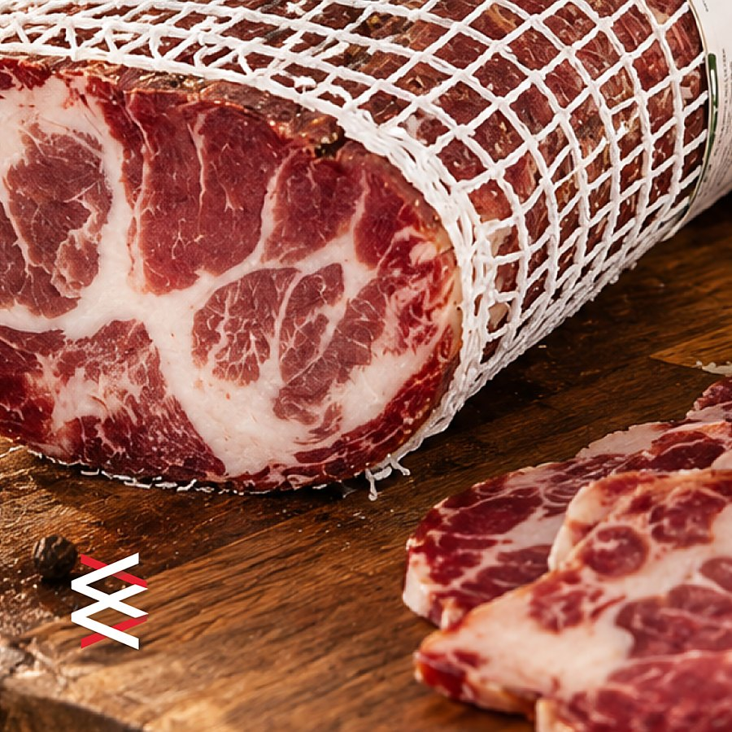
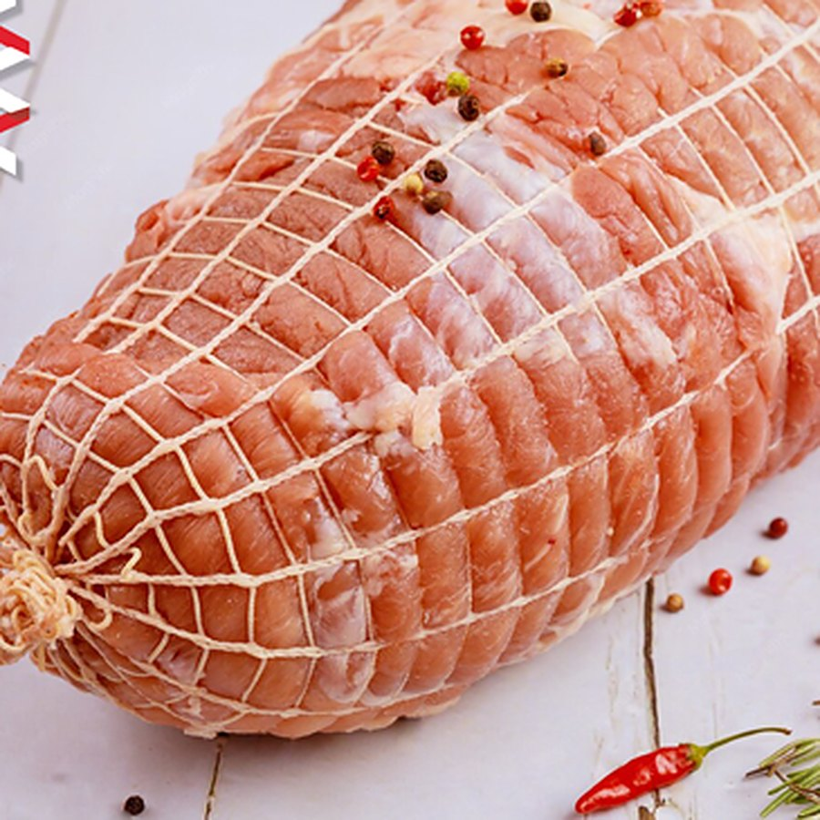
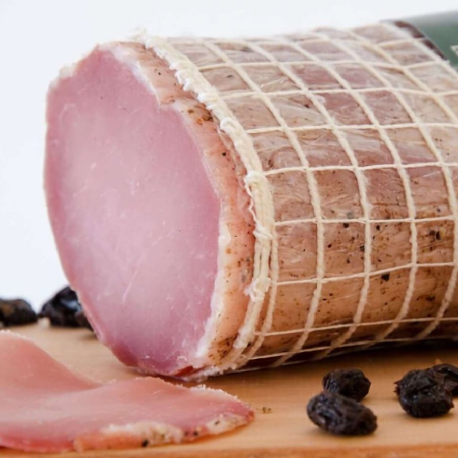
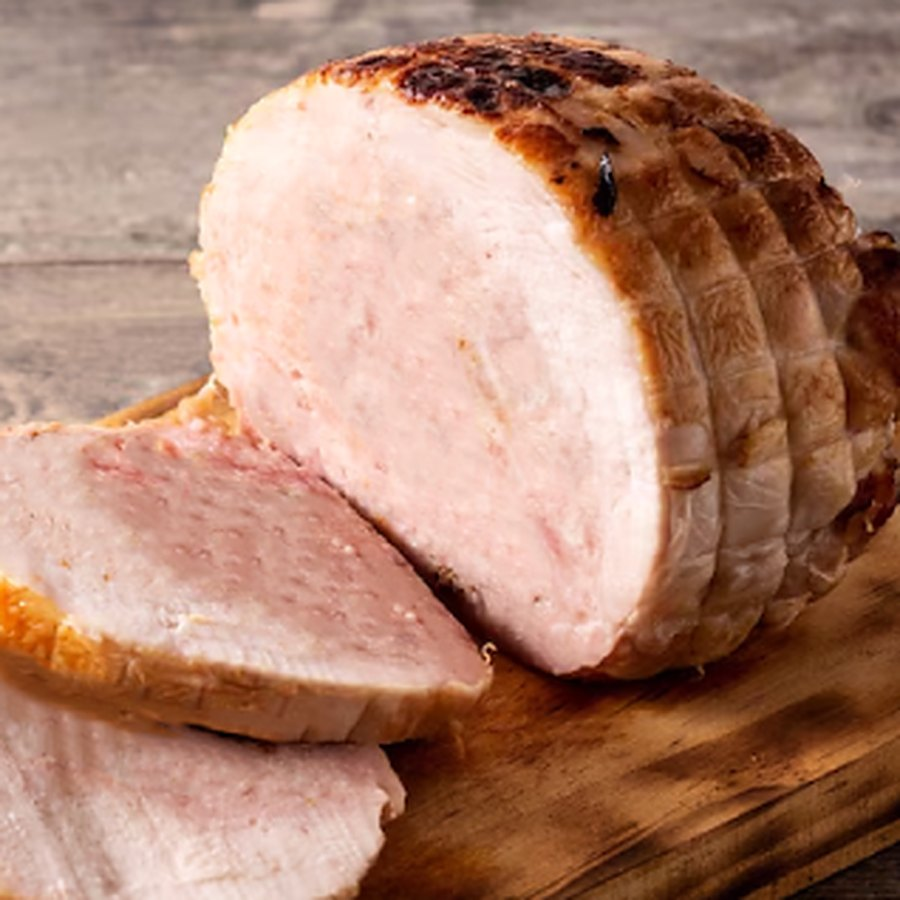

Redes elásticas Enets® para bondiola, lomo, panceta y bresaola
Tejidas en nuestra planta, en rollo. Sujeción pareja durante el curado y la cocción, buena ventilación y una presentación prolija. Elegí hilado, color y grado de compresión; con doble elástico para mayor sujeción.

- 14, 20 y 44cuadros
- Rollos de 50 mlistos para la máquina o el tubo
- Doble elásticodos hilos juntos en la trama
- Poliéster, algodón o compostablehilado a elección
Así queda
Piezas terminadas con nuestros insumos






Compresión a medida
Modelos estándar o con el grado de compresión que tu producto necesita, para acompañar la merma durante el curado sin marcar de más la pieza.
La versión con doble elástico lleva dos hilos transversales juntos en la trama en lugar de uno: más sujeción para piezas pesadas o de curado largo, como bondiolas y bresaolas.
Hilado y color
Poliéster, algodón, polietileno o material compostable. Blanco, rojo, natural o el color que pidas, para que la red también venda en la góndola.
Cuadros y usos
Rollos de 50 metros. Para jamón y mortadela usamos redes sin elastizar de 60 cuadros en rollos de 100 metros.
- 14 cuadros: arrollados
- 20 cuadros: bondiola, lomo y panceta
- 44 cuadros: jamoneta
| Red | Ancho plano (cm) | Ancho máximo (cm) | Cuadros |
|---|---|---|---|
| Bondiola N°3 | 5 | 20 | 20 |
| Bondiola N°4 | 6,5 | 22 | 20 |
| Bondiola N°5 | 7,5 | 27 | 20 |
| Jamoneta | 10 | 32 | 44 |
Preguntas frecuentes
¿Qué red elástica uso para bondiola?
La de 20 cuadros en rollo de 50 m, modelo Bondiola N°3, N°4 o N°5 según el diámetro de la pieza. Con doble elástico si querés más sujeción. Más detalle en red para bondiola.
¿Las redes se pueden hacer en otro color?
Sí. Las fabricamos en blanco, rojo, natural o en el color que necesites, en poliéster, algodón o material compostable.
¿Qué es el doble elástico?
Dos hilos elásticos transversales tejidos juntos en la trama. Da más compresión y sujeción que el hilo simple.
¿Cómo se entregan?
En rollos de 50 metros, listos para la máquina embuchadora o para el tubo de carga.